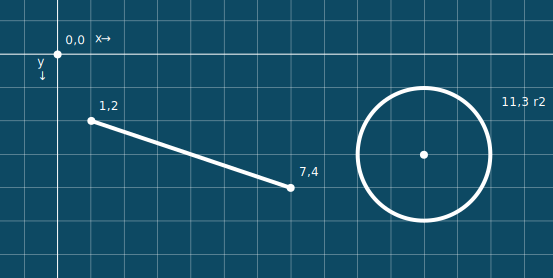

SVG = Scalable Vector Graphics
Scalable Vector Graphics (SVG) is an XML-based vector image format for two-dimensional graphics with support for interactivity and animation. The SVG specification is an open standard developed by the World Wide Web Consortium (W3C) since 1999.
SVG images and their behaviors are defined using XML text.
<img>
<img src="image.svg" />
<object>
<object type="image/svg+xml" data="image.svg" /></object>
Inline code
<svg width="200" height="200" viewBox="0 0 100 100">
<line x1="10" y1="20" x2="70" y2="40" />
</svg>
In CSS
.icon {
background-image: url("data:image/svg+xml;charset=UTF-8,%3csvg xmlns='http://www.w3.org/2000/svg' viewBox='0 0 40 40' width='40' height='40'%3e%3ccircle cx='20' cy='20' r='20' fill='red' /%3e%3ctext fill='white' x='17' y='25'%3e!%3c/text%3e%3c/svg%3e");
background-size: 56px 56px;
background-repeat: no-repeat;
}
<svg>
<svg width="200" height="200" viewBox="0 0 100 100">
Within the SVG it's more accurate to describe units instead of pixels. Each of the three following SVGs all have the same stroke width (2).
coordinates

Khan Academy
<line>
<line x1="10" y1="20" x2="70" y2="40" />
<line x1="25" y1="25" x2="75" y2="75" />
<line x1="25" y1="75" x2="75" y2="25" />
<circle>
<circle cx="50" cy="50" r="25" />
<ellipse>
<ellipse cx="50" cy="50" rx="45" ry="25" />
<rect>
<rect x="25" y="25" width="50" height="50" />
rounded rect
<rect x="25" y="25" width="50" height="50" rx="8" ry="8" />
<text>
<text> allows you to add text in a single line into the SVG. You can apply the same SVG styles, transformations, and filters to text as any other SVG element.
<text x="25" y="75">I Love SVG!</text>
I Love SVG!
<tspan>
<tspan> allows you to change text styles within the line of text, much like a <span> element in HTML.
<tspan fill="red" stroke="none">❤</tspan>
I ❤ SVG!
There is no native line-wrapping in SVG text.
<polygon>
<polygon points="50,33 75,75 25,75"/>
<path>
<path d="M52.512,43.173L37.585,18.684L26.39,27.57
c0,0,9.122,21.563-2.834,25.681c-1.451,6.502,0,18.529,0,18.529
l15.135,9.536l13.821-7.261V43.173z M47.487,43.173l14.927-24.489
L73.61,27.57c0,0-9.124,21.563,2.834,25.681c1.45,6.502,0,18.529,0,18.529
l-15.136,9.536l-13.821-7.261V43.173z"/>
Commands
M oveTo (Absolute) or m oveTo (relative)L ineToV erticalH orizontalClosePath (z )
<path d="M25,25 L75,25 L75,75 L25,75z" />
<path d="M25,25 75,25 75,75 25,75z" />
<path d="M25,25 H25 V75 H75 V25z" />
Absolute and Relative Paths
<path d="M50,33 75,75 25,75z" />
<path d="m50,33 25,42 -50,0z" />
Open path
<path d="M45,15 75,30 75,60 45,75 15,60 15,30" />
<path d="M45,15 75,30 75,60 45,75 15,60 15,30z" />
path: arc
Commands
A rcTo (A rx,ry x-axis-rotation large-arc-flag sweep-flag x,y)
<path d="M33,33 A33,33 0 1 0 67,67 " />
Arc and Sweep flags
No flags set
<path d="M33,33 A33,33 0 0 0 67,67" />
large-arc-flag
<path d="M33,33 A33,33 0 1 0 67,67" />
sweep-flag
<path d="M33,33 A33,33 0 0 1 67,67" />
large-arc-flag + sweep-flag
<path d="M33,33 A33,33 0 1 1 67,67" />
x-axis-rotation
<path d="M45,10 A15,45 0 0 0 L95,10z" />
<path d="M45,10 A15,45 15 0 0 L95,10z" />
<path d="M45,10 A15,45 30 0 0 L95,10z" />
<path d="M45,10 A15,45 60 0 0 L95,10z" />
<path d="M45,10 A15,45 90 0 0 L95,10z" />
path: cubic bézier
Commands
CurveTo (C ubic)
Mirror Handle (Cubic S )
<path d="M3,4 C1,1 1,7 5,4" />
<path d="M10,60 C-10,90 110,90 90,60" />
<path d="M50,90 C-15,40 10,5 50,30 C90,5 110,40 50,90z" />
path: quadratic bézier
Commands
CurveTo (Q uadratic)
Mirror Handle (Quadratic T )
<path d="M3,4 Q4,1 5,4" />
<path d="M5,80 Q50,5 95,80" />
Mirror handles
<path d="M5,40 C20,5 32.5,5 50,40 S82.5,75 95,40" />
<path d="M5,40 Q25,-15 50,40 T95,40 " />
<image>
<image xlink:href="hulk01.png" x="0" y="0" width="100" height="100" />
<image xlink:href="data:image/png;base64,..." x="42" y="42" width="16" height="16" />
xlink namespace is not required for inline SVGs
xmlns:xlink="http://www.w3.org/1999/xlink"
viewBox
The viewBox is the area of the artwork in the SVG that will be displayed or output. Elements that exist outside of the viewBox will not be seen.
<svg viewBox="0 0 10 6" >
<svg viewBox="0,0 10,6" >
You can think of the viewBox as an analog to the artboard in Adobe Illustrator. When Illustrator exports SVG files the artboard defines the viewBox.
viewBox (cropped)
<svg viewBox="0 0 900 100">
I ❤ SVG!
Using the SVG above, we can change the viewBox so that only portions of the SVG are displayed.
<svg width="100" height="100" viewBox="0 0 100 100">
I ❤ SVG!
<svg width="100" height="100" viewBox="100 0 100 100">
I ❤ SVG!
<svg width="100" height="100" viewBox="500 0 100 100">
I ❤ SVG!
<g>
The <g> element allows you to group elements together and apply attributes, styles, filters collectively.
<g fill="white" stroke="grey" stroke-width="7.5" transform="translate(0 20)">
<rect x="175" y="25" width="50" height="50" />
<rect x="250" y="25" width="50" height="50" />
<rect x="325" y="25" width="50" height="50" />
</g>
<defs>
<defs> should contain graphical objects to be defined for later reuse. SVG gradients, patterns, masks, markers, clip paths, and filters are a subject of their own presentation.
<defs>
<style>
.go {
fill: green;
}
</style>
<linearGradient id="Gradient01">
<stop offset="20%" stop-color="#39F" />
<stop offset="90%" stop-color="#F3F" />
</linearGradient>
<pattern id="stripe" width="10" height="10" patternUnits="userSpaceOnUse" stroke="white" fill="none" stroke-width="1">
<path fill="white" d="M0,0L10,5L0,10" />
</pattern>
<mask id="hulkMask" maskUnits="userSpaceOnUse" >
<image xlink:href="hulk01.png" x="55" y="15" width="200" height="200" viewBox="0 0 100 100" />
</mask>
<circle id="hulkContainer" class="go" cx="75" cy="50" r="25" />
<marker id="Triangle2" viewBox="0 0 10 10" refX="1" refY="5" markerWidth="6" markerHeight="6" orient="auto" stroke="none" fill="black" stroke-width="0">
<path fill="white" d="M0,0L10,5L0,10z" />
</marker>
<clipPath id="myClip">
<circle cx="420" cy="50" r="30" fill="green" />
</clipPath>
<symbol id="card" viewBox="0 0 100 100">
<rect x="0" y="0" width="75" height="75" />
<path d="M50 90 C -15 40, 10 5, 50 30 C 90 5, 110 40, 50 90z" fill="rgba(255,0,0,1)" />
</symbol>
</defs>
<style>
CSS is supported in the SVG code.
<style>
.circle1 {
fill: rgba(255, 0, 0, 0.3);
}
.go {
fill: green;
}
@media only screen and (min-width: 770px) {
.small { display: none; }
}
@media only screen and (max-width: 770px) {
.medium { display: none; }
}
</style>
Media queries continue to work within linked SVGs based on the width of the image container.
animation
Animation can be implemented using CSS. Internet Explorer does not support SVG animation.
Line drawing
I ❤ SVG!
Dots Loading
Circle Loading
<symbol>
<symbol id="card" viewBox="0 0 100 100">
<rect x="0" y="0" width="75" height="75" />
<path d="M50 90 C -15 40, 10 5, 50 30 C 90 5, 110 40, 50 90z" fill="rgba(255,0,0,1)" />
</symbol>
<symbol id="nested" viewBox="0 0 100 100">
<circle class="go" cx="50" cy="50" r="25" />
<use xlink:href="#card" x="50" y="50" width="15" height="15"/>
<text x="33" y="48" font-size="12" stroke="none" >nested</text>
</symbol>
nested
<use>
Once the symbol is in your document, you can reuse it anywhere else in your document with the <use> element.
<svg height="200" width="200">
<use xlink:href="#card" x="10%" y="10%" width="80%" height="80%" />
</svg>
<script>
<script>
function change(evt) {
var radius = evt.target.getAttribute("r") == 15 ? 30 : 15;
evt.target.setAttribute("r",radius);
}
</script>
click the circles!
<foreignObject>
Use the foreignObject tag to insert HTML elements into an SVG. Sorry, it doesn't work in Internet Explorer.
HTML Content in SVG
Use the foreignObject tag to insert HTML elements into an SVG
HTML→SVG
Web Development Invoice
item units price
HTML 5 $20.00
CSS 3 $15.00
SVG 1 $15.00
White space 40 ft2 $4000.00
Total $4050.00
<switch>
<switch> is an SVG element that can be used to check for the existence of SVG features or language support.
<switch>
<text systemLanguage="es">Hola!</text>
<text systemLanguage="en">Hello!</text>
<text systemLanguage="hi">नमस्ते</text>
<text systemLanguage="en-au">G'day!</text>
<text systemLanguage="fr">Bonjour!</text>
<text systemLanguage="en">I said, Hello!</text>
<text>Fine then, I didn't want to say 'Hi' anyway.</text>
</switch>
Hola!
Hello!
नमस्ते
G'day!
Bonjour!
I said, Hello!
Fine then, I didn't want to say 'Hi' anyway.
requiredFeatures
The following switch statement was written to replace the animated SVGs with an animated gif in browsers that don't support the SVG animation feature (such as Internet Explorer).
<switch>
<g requiredFeatures="http://www.w3.org/TR/SVG11/feature#SVG-animation" >
<circle class="loading-dot" cx="23" cy="50" r="8.9"/>
<circle class="loading-dot" cx="50" cy="50" r="8.9"/>
<circle class="loading-dot" cx="77.4" cy="50" r="8.9"/>
</g>
<image xlink:href="loading-dots-svg-backup.gif" x="0" y="0" height="100px" width="100px"></image>
</switch>
GIF included version
<object>
The <object> tag allows for interactivy in a linked file, much the same way that Adobe Flash used to be added to a page. Older (much older) browsers might require the use of <embed> to use the browser's SVG plugin.
<object type="image/svg+xml" data="component.svg" width="100%" height="200" ></object>
Scripting and font imports don't work when the SVG is displayed using an <img> element.
<img src="component.svg" width="100%" height="200" />